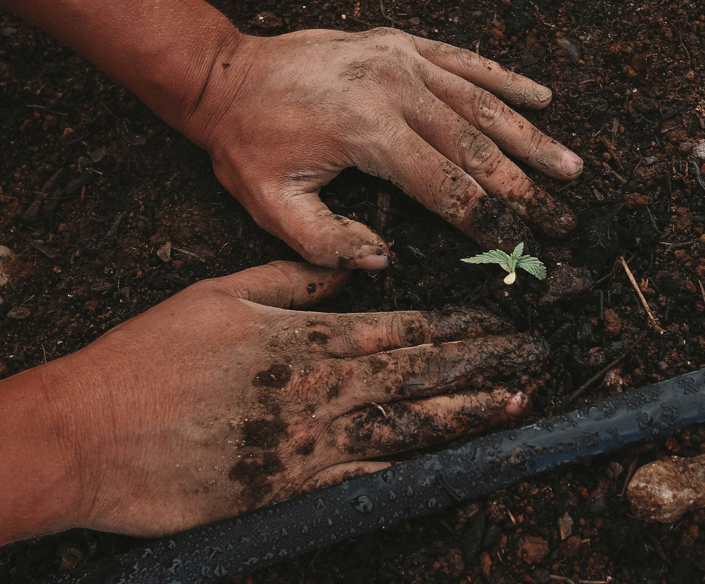
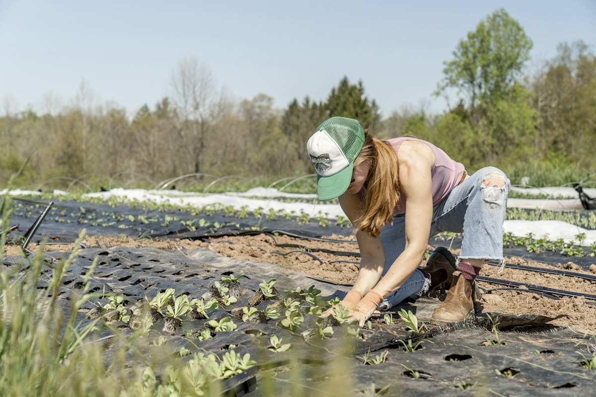

Seu Jardim Impecável,
Cuidado por Quem Entende de Serviço.
Corte de grama milimétrico, roçagem de terrenos, podas técnicas de árvores e cercas vivas, adubação e controle de pragas. Atendimento ágil para residências, chácaras, empresas e condomínios com equipe uniformizada e maquinário próprio.

O Cuidado Completo que a Sua Área Verde Precisa
Mão de obra especializada com maquinário profissional para manter seu jardim saudável, valorizado e sempre com aspecto de recém-cuidado.

Corte de Grama & Roçagem de Terrenos
Corte nivelado e uniforme com aparadores de fio e lâmina. Atendemos gramados residenciais, chácaras e roçagem de lotes em geral.
- Recolhimento e ensacamento da palha
- Acabamento rente a muros e calçadas
- Roçadeiras potentes para mato alto

Podas Técnicas & Cercas Vivas
Alinhamento geométrico de cercas vivas (sansão-do-campo, pingo-de-ouro, murta) e poda de formação e contenção de árvores e arbustos.
- Podadores mecânicos de alta precisão
- Retirada de galhos secos e perigosos
- Estímulo a brotações mais densas

Manutenção Condominial & Empresarial
Cronogramas semanais ou quinzenais com escala pontual, notas fiscais e relatórios. O jardim do condomínio sempre verde e bem apresentado.
- Contratos mensais com preço fixo
- Equipe própria com seguro e uniforme
- Emissão de Nota Fiscal e relatórios

Adubação, Gramados & Pragas
Correção de acidez do solo (calagem), adubação química (NPK) e orgânica, combate a ervas daninhas, formigas e fungos do gramado.
- Eliminação de pragas e lagartas
- Recuperação de gramados amarelados
- Replantio e correção de falhas
Profissionalismo e Pontualidade que Fazem a Diferença
Chega de jardineiros que somem no meio do serviço ou deixam calçadas cheias de mato cortado. Na TerraVerde, você tem equipe técnica, ferramentas de ponta e respeito rigoroso aos prazos combinados.
Maquinário de Linha Profissional Próprio
Trabalhamos com cortadores com tração, roçadeiras potentes, podadores de altura e sopradores elétricos para não perturbar a vizinhança.
Descarte Ecológico e Recolhimento Completo
Todo o entulho verde, folhas secas e aparas são ensacados adequadamente. Não deixamos sujeira nas garagens ou calçadas.
Contratos Transparentes com Emissão de NF
Segurança jurídica para administradoras de condomínios, síndicos profissionais e residências com pagamentos facilitados.

Compromisso TerraVerde
Se você encontrar qualquer detalhe fora do combinado, nossa equipe retorna sem custo adicional para ajustar.
Confira a Qualidade do Nosso Trabalho na Prática
Veja antes e depois de gramados renovados, alinhamento de cercas vivas e roçagens profissionais realizadas pela equipe.
 Residência de Alto Padrão
Residência de Alto Padrão
Corte e Alinhamento em Condomínio Fechado
Revitalização de 600m² de grama esmeralda com adubação de cobertura, recorte nos bordos dos canteiros e calçadas perfeitamente limpas.
 Poda Técnica
Poda Técnica
Alinhamento Retilíneo de Cerca Viva
Poda de 85 metros lineares de sansão-do-campo com aparadores mecânicos, remoção de brotos invasores e adubação foliar de reforço.
 Contrato Condominial
Contrato Condominial
Manutenção Contínua em Condomínio
Escala quinzenal cobrindo praças internas, playgrounds, área de piscina e taludes com corte pontual e tratamento contra pragas.
O Que Dizem Nossos Clientes e Síndicos
Transparência e serviço bem feito geram recomendações espontâneas.
"Contratamos a TerraVerde para a roçagem e nivelamento de um terreno de 1.200m² que estava abandonado. Fizeram o serviço em um único dia, recolheram tudo em sacos próprios e deixaram a calçada impecável. Recomendo de olhos fechados!"

"Como síndica de um condomínio de 42 casas, encontrar uma empresa com pontualidade e equipe uniformizada era um desafio. A TerraVerde cuida do nosso cronograma quinzenal há 2 anos sem uma única falha de agenda."

"A cerca viva da minha chácara estava toda torta e cheia de falhas. A equipe fez a poda no nível perfeito a laser e aplicou adubo nos canteiros. O gramado voltou a ficar verde escuro e denso em poucas semanas."

Perguntas Frequentes Sobre Nossos Serviços
Tudo o que você precisa saber sobre visitas técnicas, formas de contratação e equipamentos.
Basta enviar fotos ou um vídeo curto do seu jardim ou terreno pelo WhatsApp, informando a metragem aproximada e o serviço desejado (ex: corte de grama, poda ou roçagem). Respondemos com uma estimativa rápida em poucos minutos ou agendamos uma visita técnica no local.
Sim! Nossa equipe vai equipada com cortadores a combustão e a bateria, roçadeiras profissionais, tesouras de poda, sopradores e sacos reforçados para recolhimento. O cliente não precisa fornecer nenhuma ferramenta.
Toda a palha e sobras de podas são recolhidas, ensacadas e destinadas adequadamente. Deixamos as calçadas, muros e garagens completamente varridas e sopradas ao final de cada expediente.
Elaboramos um cronograma fixo (semanal, quinzenal ou mensal) adaptado às necessidades do seu espaço. O contrato inclui corte regular, controle preventivo de pragas, adubação sazonal, emissão de Nota Fiscal e seguro completo para tranquilidade da administração.
Pronto para Ver Seu Jardim Saudável e Perfeitamente Cuidado?
Fale conosco agora mesmo pelo WhatsApp, envie fotos da sua área verde e receba uma proposta personalizada sem compromisso.